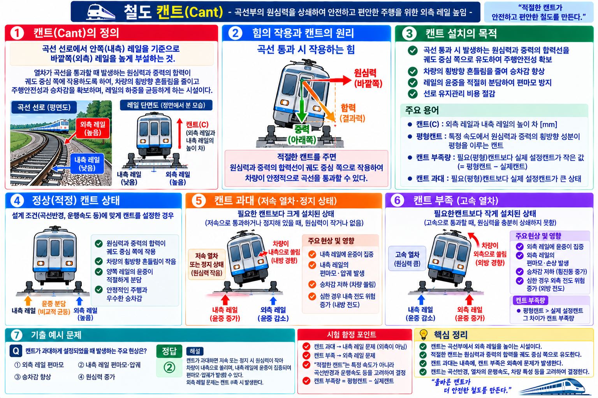

⚠ HOLD_VERIFY 상태 (v1.1) 【단위 불일치 미해결】 캔트 공식 C=G·V²/(127R)에서 SOURCE19는 G=궤간(m)으로 표기. G=m이면 공식 결과값도 m 단위여야 하나 SOURCE19는 C=mm로 표기하여 단위체계 불일치. PDF 원문 직독으로 G 단위 재확인 전 계산형 공식 FINAL 불가.
【수치 VERIFY 유지】 일반선 160mm·고속선 180mm·슬랙 30mm — SOURCE 학습값 확인. 현행 기술기준 원문 미대조. 모든 반복 위치에 VERIFY 표시 유지.
GATE5 · PART 03 · UNIT 03-02
캔트·슬랙
캔트 정의·공식·최대값, 슬랙 정의·최대값, 부족캔트·초과캔트, 캔트 vs 슬랙 비교
PART 03 선로·곡선설비★★★ 핵심HOLD_VERIFY
§1. 캔트(Cant)의 정의와 목적 (SOURCE 19)
캔트(Cant)는 곡선부에서 원심력에 대응하기 위해 바깥쪽(외측) 레일을 안쪽(내측) 레일보다 높게 설치한 높이 차이다.
캔트 설치 목적:
① 곡선부 원심력의 영향 완화
② 승차감 향상
③ 차량과 궤도에 작용하는 횡압 감소
④ 곡선 통과 안정성 향상

VIS-097 캔트(외측 레일 높임) 원리 도해 (SOURCE 19)
§2. 캔트 공식 (SOURCE 19)
C = G·V² / (127·R)
C : 캔트 VERIFY — SOURCE19 mm 표기, 단위 불일치 미해결
G : 궤간 (m) [SOURCE19·4.html 개념19 확인됨]
V : 열차속도 (km/h)
R : 곡선반경 (m)
이 공식은 SOURCE 19에서 확인된 공식이다. G의 단위는 4.html 개념19에서 궤간(m)으로 확인됨.
【단위 불일치 HOLD】 G=m이면 공식 결과값은 m 단위여야 하나 SOURCE19는 C=mm로 표기. G의 단위가 실제로 mm인지, 상수 127에 단위환산이 내포되어 있는지 PDF 원문 직독으로 재확인 필요.
VERIFY 단위체계 미확정 전 계산형 공식 FINAL 불가.
§3. 최대 캔트 기준값 (SOURCE 19) VERIFY — 기술기준 원문 미대조
선종
최대캔트
비고
일반선
160 mm VERIFY
SOURCE 19 학습값 — 현행 기술기준 원문 미대조
고속선
180 mm VERIFY
SOURCE 19 학습값 — 현행 기술기준 원문 미대조
❌ 함정 — 수치 바꿔치기
✕일반선 180mm, 고속선 160mm → 오답 (수치 교환)
○일반선 160mm, 고속선 180mm → SOURCE 학습값 VERIFY
§4. 부족캔트·초과캔트 (SOURCE 19·54)
균형캔트: 주행 속도에서 정확히 균형을 이루는 이론적 캔트값
부족캔트: 설정캔트 < 균형캔트 → 고속 주행 시 외측으로 쏠리는 경향 (외측 탈선 위험)